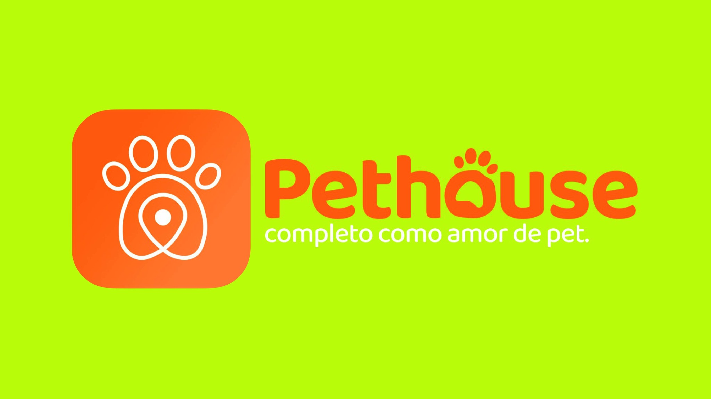
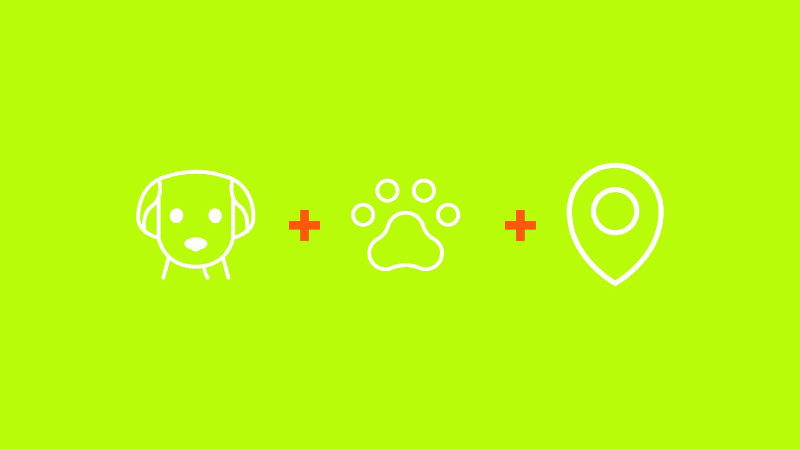
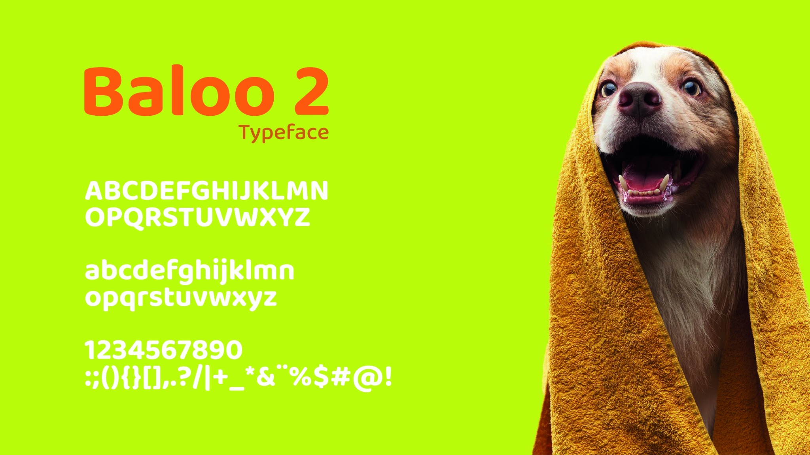
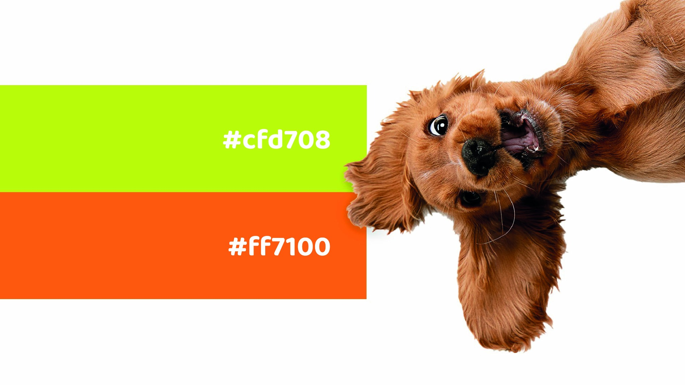
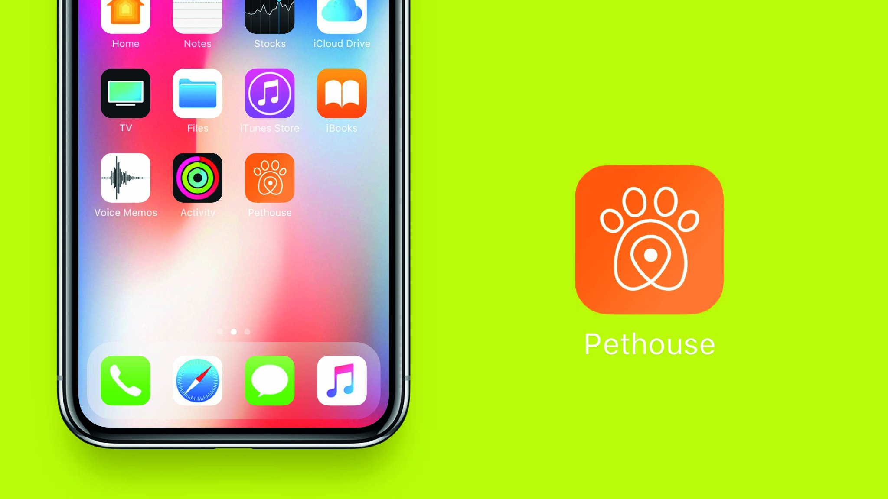
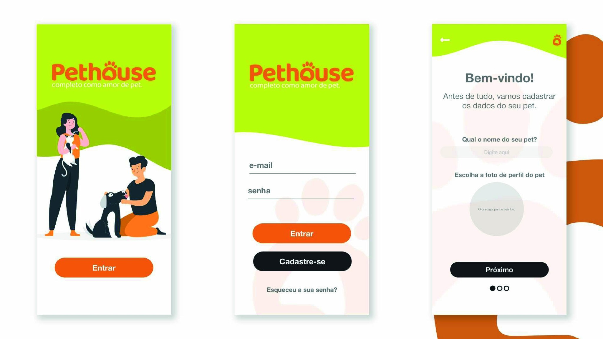
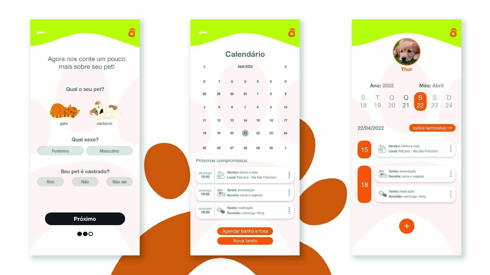
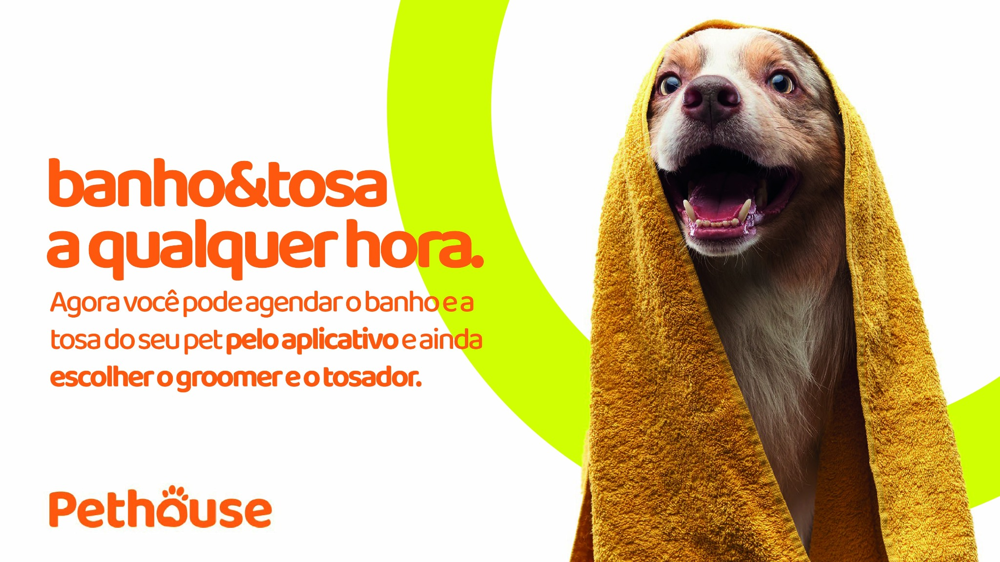
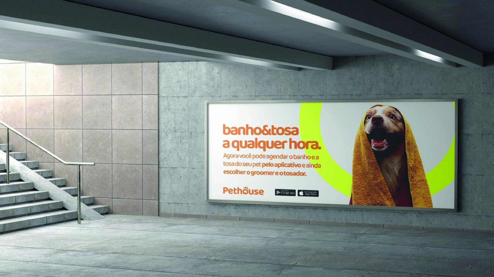
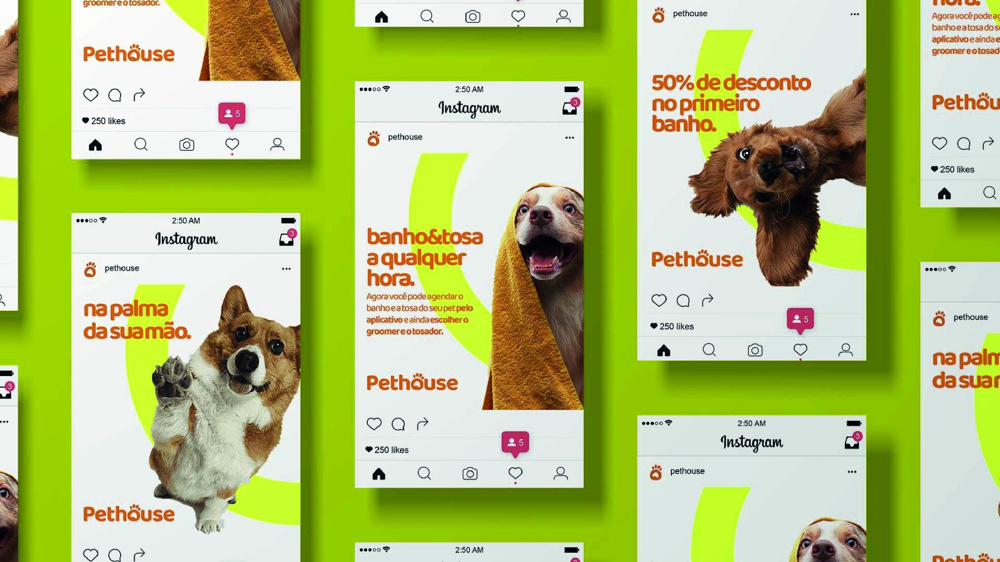

Pet
O ponto de partida da experiência e o centro de toda a linguagem da marca.
04 — Pethouse

Contexto
A Pethouse foi concebida como uma experiência capaz de aproximar tutores dos serviços do dia a dia do pet, reunindo identidade, produto digital e comunicação em um mesmo sistema.
A marca precisava ser direta, amigável e fácil de reconhecer — tanto como aplicativo na tela do celular quanto em uma campanha de banho e tosa.
Conceito
O símbolo combina três referências simples: o rosto de um pet, a pata e o ícone de localização. A síntese transforma a ideia de “perto de você” em um elemento visual memorável.
A linguagem mantém formas arredondadas, alto contraste e uma personalidade leve para conversar com um universo de cuidado sem parecer infantil.
O ponto de partida da experiência e o centro de toda a linguagem da marca.
A pata transforma afeto, rotina e atenção em um sinal visual simples e reconhecível.
O pin reforça a proposta de encontrar serviços e cuidados disponíveis perto do tutor.

Sistema visual
A tipografia Baloo 2 reforça a personalidade amigável da marca, enquanto o verde vibrante e o laranja criam reconhecimento imediato e sustentam uma comunicação de alta energia.


Produto digital
O sistema visual foi levado para um aplicativo com cadastro do pet, calendário, lembretes e acesso a serviços.
A interface mantém a mesma lógica da identidade: cores fortes para orientar ações, formas suaves e uma navegação direta.



Campanha & presença



Resultado
O projeto conecta símbolo, interface e campanha em uma linguagem coerente, com presença visual suficiente para ser reconhecida no aplicativo, nas peças promocionais e na mídia exterior.
Contato
Projeto, oportunidade profissional ou uma boa troca sobre design — escolha o canal que fizer mais sentido.
© 2026 · Bernardo Ramalho